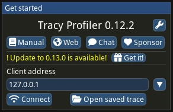
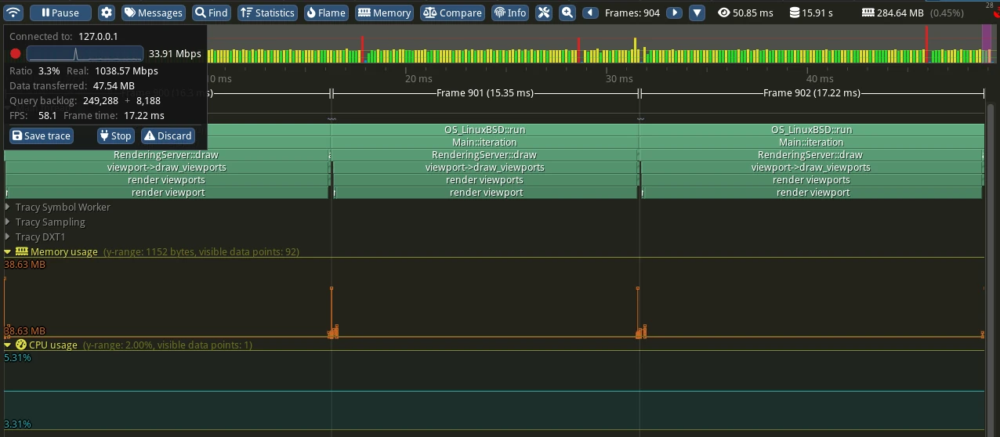

Tracy
See also
Please see the tracing profiler instructions for more information.
Tracy is an Open Source profiler that runs on a wide variety of platforms, including Windows, Linux, and macOS. While it is primarily a tracing profiler, it can also periodically sample data like a sampling profiler, giving some of the benefits of both approaches.
Build Godot with Tracy support
First, clone the latest version of the Tracy source code ("0.13.0" at the time of writing) using Git:
git clone -b v0.13.0 --single-branch https://github.com/wolfpld/tracy.git
This will create a tracy directory - you can place this anywhere.
Next, build the release templates for your platform using scons, but adding
the profiler=tracy profiler_path=path/to/tracy arguments with the real path
to the tracy directory, as well as debug_symbols=yes to allow Tracy's
sampling features to work.
Note
You don't have to build release templates, you could also build debug templates, or even the editor. However, it's generally recommended to profile release templates, because that is the version your players will use, and it will perform differently than other types of builds.
For example, to build release templates for Windows:
scons platform=windows target=template_release debug_symbols=yes profiler=tracy profiler_path=path/to/tracy
Get the Tracy "server"
In Tracy terminology, the application you are profiling is the "client", and the one receiving the data is the "server".
If you are on Windows, you can download a pre-built tracy-profiler.exe
from the Tracy releases page.
However, if you're on Linux or macOS, you'll either need to find a pre-built
binary from a package manager (like brew or nix), or build it from
source yourself.
Note
If you do use a pre-built binary, be sure to use the same version that you used when building Godot.
Build the Tracy server from source
In order to build Tracy, you'll need to install cmake, which can be
downloaded from the CMake website, or
possibly installed via a package manager (like brew or nix).
The full instructions for building Tracy from source can be found in the Tracy manual, but here is the TL;DR:
# On Linux, Tracy uses Wayland by default, so if you use X11 add -DLEGACY=1
cmake -B profiler/build -S profiler -DCMAKE_BUILD_TYPE=Release
cmake --build profiler/build --config Release --parallel
This will place the binary at tracy/profiler/build/tracy-profiler or
tracy/profiler/build/tracy-profiler.exe (on Windows).
Record a trace
Launch the Tracy server - you'll see something like this:

Press "connect". This will ensure tracy makes a connection immediately when
the game launches. If you forget to press "connect", Tracy will store system
events in RAM, which can quickly blow up your memory usage (see the
TRACY_ON_DEMAND documentation).
Now, export your game using the release templates you built above, and run it. As soon as both are running, and you have pressed the "Connect" button in Tracy, you'll see data coming in:

When you think you've gathered enough data, press the "Stop" button. If you clicked somewhere and the box with the "Stop" button disappeared, you can click the top-left most icon to bring it back.
Examining the trace
Here are some of the basic controls:
Zoom in/out with the mouse wheel
Right click and drag to move forward/backward on the timeline
In the top bar, click the left and right arrow buttons by "Frames" to move a single frame on the timeline
To learn more, see the Tracy manual.